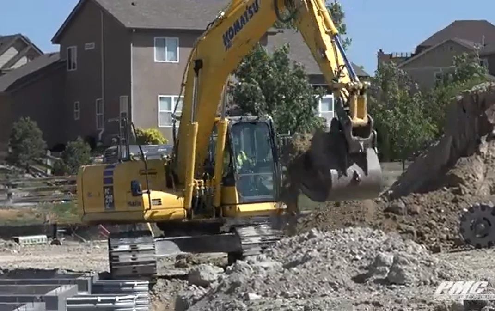
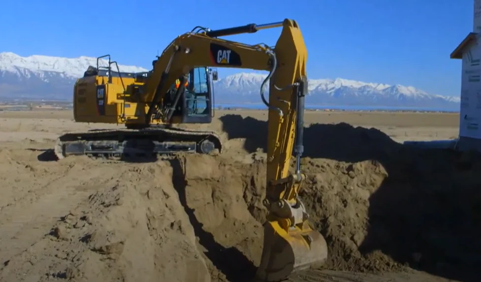
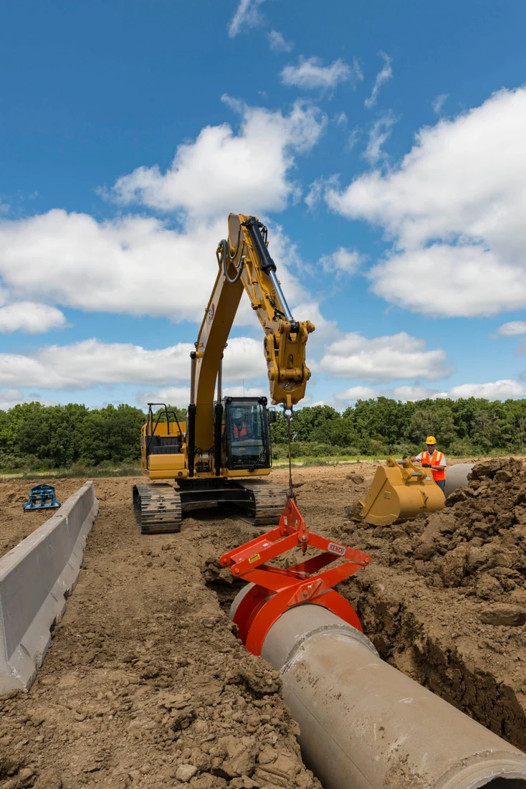
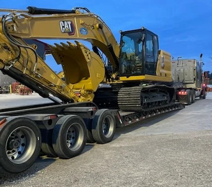

核心规格产品细分市场销量分析—19-24吨产品
分析结论： 1、北美市场近三年销量形成卡特，迪尔，小松三巨头以及其他厂家纷争的局面，三巨头合计占比约70%的市场份额。 2、该吨位区间中大挖的热门吨位，主要应用在中大规模土方工程、建筑地基开挖以及各类市政工程。卡特在该吨位布局3款产品，分别是高配版 323，中配版320以及低配经济型320GC。迪尔于拉展亮相全新一代产品，形成230P、210P高低配置版本。
CATDEEREKOMATSUXCMG
数据来源：EDA数据（融资购买，新车）
分析结论： 1、北美市场近三年销量形成卡特，迪尔，小松三巨头以及其他厂家纷争的局面，三巨头合计占比约70%的市场份额。 2、该吨位区间中大挖的热门吨位，主要应用在中大规模土方工程、建筑地基开挖以及各类市政工程。卡特在该吨位布局3款产品，分别是高配版 323，中配版320以及低配经济型320GC。迪尔于拉展亮相全新一代产品，形成230P、210P高低配置版本。
数据来源：EDA数据（融资购买，新车）
运输场景： 因19-24吨级产品的运输高度超过2590mm，因此需要用到阶梯式拖车，但车辆高度不能高于3099mm，整车宽度宽度超过2590mm，需要申请超宽运输申请，XE225U整车运输高度3030mm，满足限高要求。同时单轴运输重量20000磅（额定载重9072kg）,因此需要三轴拖车（额定载重27216kg）

| 吨级 | 竞品 型号 | 徐工 型号 | 是否通用场景 | 施工场景 | 施工场景及工况描述 | 主要客户类型 | 主要客户需求特点 | 工况满足性分析 |
|---|---|---|---|---|---|---|---|---|
| 5-6吨 | 卡特 320 | XE210UXE225U | 否 | 阶梯式拖车运输专场 | 施工工况： 代理商至终端客户 终端客户至施工现场 美国道路法规运输限制： 整车长度：组合车辆（卡车牵引车加半挂车或拖车）不得超过 65 英尺或 75 英尺的最大总车辆长度 宽度：不得超过2590mm 高度：不存在联邦车辆高度限制，不同州规定略有不同。国家标准范围从 13.6 英尺(4145mm)到 14.6 英尺(4450mm)。 | 中小型建筑公司和房地产开发商40% 能源和石油天然气公司25% 市政工程和公共事业单位20% 景观建设公司15% 租赁商15% | 客户常用阶梯式板车进行托运，挖机运输高度不能高于3099mm,运输宽度通常超过2590mm需要申请超宽运输许可，但不需要引导车 | 该工况基本满足： 目前徐工XE225U整机运输高度3030mm，整车重量23500kg，满足限高和限重要求。但是需要申请超宽运输许可。 20吨级产品作为中大挖产品中占比最高的产品应用广泛，建议在20吨平台上开发17吨产品(XE170U)，整车宽度不超过2590mm,既能节省运输成本，还能够满足客户对于20吨级产品作业性能的需求。 |
| 卡特 323 |
分析结论：


| 吨级 | 竞品 型号 | 徐工 型号 | 是否通用场景 | 施工场景 | 施工场景及工况描述 | 主要客户类型 | 主要客户需求特点 | 工况满足性分析 |
|---|---|---|---|---|---|---|---|---|
| 19-24吨 | 卡特 320 323 | XE225U | 是 | 土方开挖和搬运，主要用于建筑工地、道路建设和基础设施项目中，负责挖掘、搬运和堆放土方。 | 施工步骤： ① 场地准备：清除地表植被、岩石和其他障碍物，确保施工区域安全。 ② 测量放线：根据设计图纸，标记开挖区域的边界和深度。 ③ 土方开挖：按照标记进行挖掘，控制挖掘深度和坡度，防止塌方。 ④ 土方搬运：将挖出的土方装载到自卸卡车，运至指定的堆放或填埋地点。 ⑤ 场地整理：完成挖掘后，对场地进行平整和压实，准备后续施工。 作业对象： 各类植被、土壤、砂石、黏土和部分岩石层。 作业特点： ① 持续高强度作业，需要设备具有强大的挖掘力和稳定性 ② 需要精准控制挖掘深度和坡度，以确保施工安全和质量。 | 大型工程承包商、大型建筑承包商 | 1、液压系统响应灵敏，操作平稳，便于精细作业。 2、需要强大的挖掘和提升能力，加快施工进度，提升装载效率。 | 1.满足，徐工XE225U电控正流量系统，响应快、微操控性好。 2.回转力矩偏小，一定程度影响了挖装效率 |
分析结论：

| 吨级 | 竞品 型号 | 徐工 型号 | 是否通用场景 | 施工场景 | 施工场景及工况描述 | 主要客户类型 | 主要客户需求特点 | 工况满足性分析 |
|---|---|---|---|---|---|---|---|---|
| 19-24吨 | 卡特 320 323 | XE225U | 是 | 在市政工程和基础设施建设中，液压挖掘机用于挖掘沟槽，以铺设水、电、气等管线。 | 施工步骤： ① 现场勘察：确认地下已有管线位置，避免施工中损坏。 ② 标记线路：根据设计图纸，标示管线走向和深度。 ③ 沟槽开挖：按照规定的宽度和深度挖掘沟槽，确保边坡稳定。 ④ 管线铺设：将管道放入沟槽，进行连接和密封处理。 ⑤ 回填与压实：分层回填土方，逐层压实，恢复地面。 作业对象： 各类土质，可能包含地下水和岩石层。 作业特点： ①高精度要求：挖掘尺寸、深度需严格控制。 ②部分场景空间受限：通常在城市或人口密集地区作业，需小心操作。 ③可能需要长距离挖沟作业，对整机可靠性要求高。 | 市政部门、 小型项目承包商 | 1、微操控性强，避免过度挖掘或损坏周边设施。 2、短尾设计，提高城市道路狭小空间作业安全性。 3、深沟挖掘可能需要配置加长斗杆。 4、配置橡胶履带块，避免对原有路面的损坏。 5、有良好的起吊能力，行走+上车复合动作启停平顺 6、需要切换多种铲斗作业 7.挖沟对于回转启停操控性要求较高，避免挖掘过程中彭到沟壁 | 1、经过优化后，产品微操控性基本满足客户需求。 2、满足 3、缺少长斗杆，深沟挖掘作业受限。 4、满足，可配置600mm款橡胶履带板 5、基本满足，产品经过行走电控及阀芯优化后，行走+上车复合动作得到很大提升，但和全电控及三泵系统相比，仍有一定差距 6、选配液压快换，可配置挖斗和清理斗等 7、回转制动控制线性不足，冲击较大，优化回转制动为电控 |
分析结论：基本满足，但缺少长斗杆，深沟挖掘受限；产品经过行走电控及阀芯优化后，行走+上车复合动作得到很大提升，但和全电控及三泵系统相比，仍有一定差距，特别是上车动作停止时，行走加速冲击；回转制动控制线性不足，冲击较大，建议优化回转制动为电控。

| 吨级 | 竞品 型号 | 徐工 型号 | 是否通用场景 | 施工场景 | 施工场景及工况描述 | 主要客户类型 | 主要客户需求特点 | 工况满足性分析 |
|---|---|---|---|---|---|---|---|---|
| 19-24吨 | 卡特 320 323 | XE225U | 是 | 在道路建设中用于路基开挖、排水系统建设和路面维修等工作。 | 施工步骤： ① 旧路面拆除：移除破损的路面材料。 ② 路基开挖与整平：挖掘并平整路基，确保符合设计要求。 ③ 排水系统建设：挖掘排水沟渠，铺设排水管道。 ④ 填筑路基材料：分层填筑、压实路基材料。 ⑤ 路面铺设：配合其他设备完成路面材料的铺设和压实。 作业对象： 各类土质、岩石、旧路面材料。 作业特点： ① 施工面积大，工作量大，需长时间高效作业。 ② 多功能：可配置多种机具，如挖斗、拇指钳、液压夯等。 ③ 可能在交通繁忙区域施工，需确保安全。 | 大型工程承包商、政府部门、市政部门 | 1、微操控性强，避免过度挖掘或损坏周边设施。 2、短尾设计，提高城市道路狭小空间作业安全性。 3、深沟挖掘可能需要配置加长斗杆。 4、配置橡胶履带块，避免对原有路面的损坏。 5、有良好的起吊能力，行走+上车复合动作启停平顺 6、需要切换多种机具作业 7.挖沟对于回转启停操控性要求较高，避免挖掘过程中彭到沟壁 8、具有良好的平地性能，进行高效平整作业 | 1、经过优化后，产品微操控性基本满足客户需求。 2、满足 3、缺少长斗杆，深沟挖掘作业受限。 4、满足，可配置600mm款橡胶履带板 5、基本满足，产品经过行走电控及阀芯优化后，行走+上车复合动作得到很大提升，但和全电控及三泵系统相比，仍有一定差距 6、标配两套机具管路、配置PTO泵+河流及液压快换，可配置多种机具。 7、回转制动控制线性不足，冲击较大，优化回转制动为电控 8、满足 |
分析结论：标配AUX1、AUX2和卸油管路，同时配合PTO泵独立供油和机具系统合流，提升机具系统匹配能力和动作协调性。满足破碎机具的匹配要求；高密封性增压驾驶室+驾驶室全防护，提高作业的安全性。


| 吨级 | 竞品 型号 | 徐工 型号 | 是否通用场景 | 施工场景 | 施工场景及工况描述 | 主要客户类型 | 主要客户需求特点 | 工况满足性分析 |
|---|---|---|---|---|---|---|---|---|
| 19-24吨 | 卡特 320 323 | XE225U | 是 | 配备特殊属具，如破碎锤、拇指钳、液压剪等，用于建筑物和结构的拆除。 | 施工步骤： ① 现场评估：确定建筑结构和材料，制定拆除方案。 ② 安全准备：断水、断电、设立安全围栏和警示标志。 ③ 结构拆除：使用铲斗、拇指钳、液压剪或破碎锤逐步拆除建筑物。 ④ 废料处理：分类回收或处理拆除产生的废弃物。 作业对象： 钢筋混凝土、砖石结构、金属构件等。 作业特点： ① 有时需要精细作业。 ② 高风险作业，需高度重视安全，防止碎屑进入驾驶室误伤机手。 | 拆迁公司、小型项目承包商 | 1、客户习惯在常规挖机上用铲斗配合拇指钳，或者安装筛分斗进行房屋建筑拆除。 2、对微操控性要求较高，机具要求比例控制，微操控性要好，有时需要精准拆除，避免损坏非拆除部分。 3、部分情况需加装驾驶室防护装置。 4、驾驶室防尘性能好。 | 1、标配AUX1,AUX2和卸油管路，配合液压快换，满足多种机具快速切换需要 2、产品优化后基本满足 3、可选配驾驶室全防护 4、基本满足 |
分析结论：参数水平与竞品相当。
| 参数类型 | 客户关注度自评 | 单位 | XCMG | CAT | 对比结果 | |
|---|---|---|---|---|---|---|
| XE225U | 323 | |||||
| 运输参数 | 操作重量 | ★ ★ ★ | kg | 23500 | 22900- 25600 | 与竞品相当。 |
| 整机运输宽度 | ★ ★ ★ | mm | 3190 | 3170 | ||
| 整机运输高度 | ★ ★ | mm | 3030 | 3100 | ||
| 整机运输长度 | ★ ★ | mm | 9810 | 9530 | ||
| 接地参数 | 底盘宽度 | ★ ★ | mm | 3190 | 3170 | 与竞品相当。 |
| 轴距 | ★ | mm | 3650 | 3650 | ||
| 履带长度 | ★ | mm | 4450 | 4450 | ||
| 履带宽度 | ★ | mm | 800 | 790 | ||
| 工作参数 | 最大挖掘高度 | ★ ★ | mm | 9620 | 9330 | 挖掘范围较竞品有一定优势 |
| 最大挖掘深度 | ★ ★ ★ | mm | 6680 | 6620 | ||
| 最大地面挖掘半径 | ★ ★ ★ | mm | 9780 | 9760 | ||
| 尾部回转半径 | ★ ★ ★ | mm | 3015 | 2830 |
分析结论：
| 功能配置 | XCMG | CAT | 对比结果 | |||
|---|---|---|---|---|---|---|
| 功能 | 配置 | 客户关注度 | 单位 | XE225U | 323 | |
| 动力 | 发动机功率 | ★ ★ ★ | kW | 129 | 128 | 和竞品相当。 |
| 工作装置 | 标配斗杆 | ★ ★ ★ | mm | 2910 | 2900 | 工装配置卡特更为全面，徐工没有长斗杆配置，深沟挖掘作业能力不如卡特。 |
| 标配动臂 | ★ ★ ★ | mm | 5680 | 5700 | ||
| 选配斗杆 | ★ ★ | mm | 2400 | 3900 超长斗杆：6280 | ||
| 选配动臂 | ★ ★ | mm | / | 二节臂：2800+ 3300 超长臂：8850 | ||
| 属具系统 | AUX1 | ★ ★ | / | 标配 | 选配 | 标配AUX1和AUX2及卸油管路，配置PTO泵和AUX1合流功能，机具系统流量大，复合动作协调，机具适配性更强 卡特323机型使用加重配重，稳定性更好， 标配铲斗斗容更大。 |
| AUX1操作 | ★ ★ | / | 比例手柄 | |||
| AUX2 | ★ ★ | / | 标配 | 选配 | ||
| AUX2操作 | ★ ★ | / | 比例手柄 | |||
| 卸油管路 | ★ ★ | / | 标配 | / | ||
| 快换 | ★ ★ ★ | / | 选配 | 选配 | ||
| 标配铲斗 | ★ ★ ★ | m³ | 1.2 | 1.3 | ||
| 液压系统 | 液压系统 | ★ ★ | 类别 | 电控正流量 | 全电控 | 卡特全电控系统，响应速度更快，控制更为智能化。 没有自动双速功能，切换不够灵活。 |
| 行驶高低速控制方式 | ★ | / | 手动 | 自动双速 | ||
| 回转马达 带刹车系统 | ★ | / | 机械 | / |
分析结论： 卡特整体的智控化程度更高。卡特搭载多项智控技术，整体作业效率和安全性更强。卡特可选配360°环视摄像头，徐工目前没有选配配置，但已将一套360°摄像头备件发往前方，等待相关测试验证。
| 功能配置 | XCMG | CAT | 对比结果 | |||
|---|---|---|---|---|---|---|
| 功能 | 配置 | 客户关注度 | 单位 | XE225U | 323 | |
| 电气系统 | DAB收音机 | ★ ★ | / | 选配 | / | 和竞品相当 |
| 空调系统 | ★ ★ ★ | / | 标配 | 标配 | ||
| GPS监控 | ★ ★ | / | Trimble | Product Link | ||
| 360°环视摄像头及障碍物检测 | ★ ★ | / | / | 选配 | 卡特搭载多项智控技术，整体作业效率和安全性更强。 卡特可选配360°环视摄像头，徐工目前没有选配配置，但已将一套360°摄像头备件发往前方，等待相关测试验证。 | |
| 2D辅助系统 | ★ ★ | / | / | 标配 | ||
| 电子围栏 | ★ ★ | / | / | 标配 | ||
| 自动称重 | ★ | / | / | 标配 | ||
| 自动破碎锤停止 | ★ | / | / | 标配 | ||
| 仪表设置属具控制模式 | ★ | / | 标配 | 标配 | 和竞品相当 | |
| 仪表设置属具压力 | ★ | / | 标配 | 标配 | ||
| 仪表设置属具流量 | ★ | / | 标配 | 标配 |
分析结论： 徐工液压系统最大流量优于竞品，复合动作流量充足，执行动作快，客户体验感较明显且竞争力对比度高；回转系统压力弱于竞品，一定程度影像挖掘甩方的效率；卡特配合大配重，起吊能力更强；徐工斗杆挖掘力和竞品相当，但铲斗挖掘力偏小。
| 性能 | XCMG | CAT | 对比结果 | |||
|---|---|---|---|---|---|---|
| 类别 | 名称 | 客户关注度 | 单位 | XE225U | 323 | |
| 力学性能 | 斗杆挖掘力 | ★ ★ ★ | kN | 111 | 109 | 卡特323为高配版机型，采用5.4t配重，起吊能力更强。 同时挖掘力更高，回转力矩更大，作业更有劲。 |
| 铲斗挖掘力 | ★ ★ ★ | kN | 149 | 163 | ||
| 地面6m 起吊力 | ★ ★ ★ | kg | 7190 | 8300 | ||
| 行驶牵引力 | ★ ★ | kN | 214 | 203 | ||
| 回转力矩 | ★ | kN.m | 69.5 | 82 | ||
| 工作 速度 | 主泵流量 | ★ ★ | L/min | 2*220+43 | 2*214.5 | 徐工系统流量更优。 |
| 主泵压力 | ★ ★ | Mpa | 34.3/37 | 35/38 | ||
| 行驶速度 | ★ ★ | km/h | 3.5/5.4 | /5.7 | ||
| 回转速度 | ★ ★ | r/min | 11.8 | 11.25 | ||
| AUX1 最大流量 | ★ ★ | L/min | 350 | / | ||
| AUX2 最大流量 | ★ ★ | L/min | 43 | / |
分析结论： 1、安全性-直接安全：卡特搭载多种智控技术，可选配360°环视摄像头，直接作业安全性能更优。目前已发一套360°环视摄像头至前方试装。后期中大挖系列产品进行全电控升级，将搭载相关智控技术提升作业安全。 2、安全性-间接安全：徐工相关配置齐全，满足相关安全需求。 3、安全性-指导性安全：徐工与竞品在指导性安全标识方面均齐全，可指导用户按照安全规范进行施工作业。
| 维度 | 一级指标 | 二级指标 | 客户关注度 | 单位 | XE225U | 323 | 结论 |
|---|---|---|---|---|---|---|---|
| 安全性 | 直接安全 | 智能称重 | ★ ★ | —— | 无 | 标配 | 卡特更优。 |
| 电子围栏 | ★ ★ | —— | 无 | 标配 | |||
| 360°环视 | ★ ★ | —— | 无 | 选配 | |||
| 间接安全 | ROPS/OPG | ★ ★ ★ | —— | 有 | 有 | 与竞品相当。 | |
| 驾驶室顶防护 | ★ ★ | —— | 有 | 有 | |||
| 驾驶室前防护 | ★ ★ | —— | 有 | 有 | |||
| 行走报警 | ★ ★ ★ | —— | 有 | 有 | |||
| 信标灯 | ★ ★ | —— | 有 | 有 | |||
| 后视镜 | ★ ★ | —— | 有 | 有 | |||
| 扶手 | ★ ★ ★ | —— | 有 | 有 | |||
| 上车防滑贴 | ★ ★ ★ | —— | 有 | 有 | |||
| 防爆阀 | ★ | —— | 有 | 选配 | |||
| 急停开关 | ★ ★ | —— | 有 | 有 | |||
| 指导性安全 | 安全标识 | ★ ★ | —— | 有 | 有 | 与竞品相当。 | |
| 安全描述 | ★ ★ | —— | 有 | 有 |
分析结论： 1、可靠性：徐工整机经过仿真、测试、震动跑道、工业性考核及海外客户试用多重环节验证，可靠性与卡特相当，用户购车后经久耐用； 2、环境适应性：整机油漆和防锈质量弱于卡特，后续优化紧固件、提升油漆、橡胶件耐久性；特殊环境：得克萨斯州、亚利桑那州等地夏季高温炎热（40℃以上），徐工经过高温50°热平衡测试，满足高温作业需求；加拿大多个地区冬季有极寒天气（-20℃以下），XE225U可选配低温冷启动系统，满足极寒环境需求。
| 维度 | 一级指标 | 二级指标 | 客户关注度 | 单位 | XE225U | 323 | 结论 |
|---|---|---|---|---|---|---|---|
| 环境适应性 | 常规环境适应性 | 温度 | ★ ★ | °C | -15-50 选配-32-50 | -18-52 选配-32-52 | 和竞品相当。 |
| 冷启动 | ★ ★ ★ | —— | 选配缸体加热器 | ||||
| 液压油预热 | ★ ★ ★ | —— | 无 | 自动 | |||
| 湿度 | ★ ★ | % | 10-80 | 10-80 | |||
| 高原 | ★ ★ | m | 3000 | 3000 | |||
| 盐雾 | ★ ★ ★ | —— | 中性 | 中性 | |||
| 沙尘 | ★ ★ | —— | 4 | 4 | |||
| 紧固件防锈性 | ★ ★ ★ | 4 | 5 | 弱于竞品 | |||
| 薄板件油漆耐久性 | ★ ★ ★ | 4 | 5 | ||||
| 橡胶件耐久性 | ★ ★ ★ | 4 | 5 |
分析结论： 1、操控性-行走操控性：脚阀线性度不足，阀芯开口易受整机晃动影响，造成行走冲击； 2、操控性-单动作操控性：徐工在作业微动性、平顺性方面较卡特全电控系统有差距； 3、操控性-复合动作操控性：徐工工作装置的动作复合协调性和竞品相当，但因回转制动的微操控性不足，导致回转复合动作操控性不足；同时行走+上车复合动作，上车动作停止时，行走冲击较大。
| 维度 | 一级指标 | 二级指标 | 客户关注度 | 单位 | XE225U | 323 | 结论 |
|---|---|---|---|---|---|---|---|
| 操控性 | 行走操控性 | 行走跑偏量 | ★ ★ ★ | —— | 4 | 4 | 脚阀线性度不足，阀芯开口易受整机晃动影响，造成行走冲击。 |
| 行走启动操控性 | ★ ★ | —— | 4 | 4 | |||
| 行走制动操控性 | ★ ★ | —— | 4 | 4 | |||
| 行走转向操控性 | ★ ★ | —— | 4 | 4 | |||
| 单动作操控性 | 手柄空行程 | ★ ★ | —— | 4 | 5 | 卡特全电控系统，同时搭载如精准回转fine swing、辅助控制等功能，整体操控性更强。 | |
| 手柄线性度 | ★ ★ | —— | 4 | 4 | |||
| 手柄拨轮空行程 | ★ ★ | —— | 4 | 5 | |||
| 手柄拨轮线性度 | ★ ★ | —— | 4 | 4 | |||
| 作业精准性 | ★ ★ ★ | —— | 3 | 4 | |||
| 作业微动性 | ★ ★ | —— | 3 | 4 | |||
| 作业响应性 | ★ ★ ★ | —— | 4 | 4 | |||
| 作业平顺性 | ★ ★ ★ | —— | 3 | 4 | |||
| 缓冲性 | ★ ★ | —— | 4 | 4 | |||
| 复合动作操控性 | 挖掘装车动作协调性 | ★ ★ ★ | —— | 4 | 5 | 与卡特全电控系统操控性存在差距。 | |
| 平地操作协调性 | ★ ★ ★ | —— | 4 | 5 | |||
| 回转复合动臂动作协调性 | ★ ★ ★ | —— | 4 | 5 |
分析结论： 1、操控性-人机匹配舒适性：交互界面友好性弱于竞品，卡特配备10英寸显示器，主界面设置快捷按钮，方便操作常用功能如机具模式、操作模式切换等，并支持英制单位，整体菜单更容易使用，后续需升级大显示器并更新显示器程序提升交互体验；其他与竞品相当。
| 维度 | 一级指标 | 二级指标 | 客户关注度 | 单位 | XE225U | 323 | 结论 |
|---|---|---|---|---|---|---|---|
| 操控性 | 人机匹配舒适性 | 驾驶室空间舒适性 | ★ ★ ★ | —— | 4 | 4 | 和竞品相当 |
| 驾驶室密封性 | ★ ★ | —— | 5 | 5 | |||
| 空调性能 | ★ ★ ★ | —— | 4 | 4 | |||
| 座椅舒适性 | ★ ★ | —— | 4 | 4 | |||
| 操纵装置可及性 | ★ ★ | —— | 4 | 4 | |||
| 操纵装置可视性 | ★ ★ | —— | 4 | 4 | |||
| 人体姿态舒适性 | ★ ★ ★ | —— | 4 | 4 | |||
| 交互界面友好性 | ★ ★ | —— | 3 | 4 | 交互界面友好性弱于竞品 | ||
| 交互响应及时性 | ★ ★ ★ | —— | 4 | 4 | |||
| 操作件易识别性 | ★ ★ | —— | 3 | 4 | 和竞品相当 | ||
| 上下车便利性 | ★ ★ | —— | 4 | 4 | |||
| 视野 | ★ ★ ★ | —— | 5 | 5 | |||
| 振动舒适性 | ★ ★ | —— | 4 | 4 | |||
| 噪声舒适性 | ★ ★ | dB | 103 | 103 | |||
| 空间舒适性 | ★ ★ ★ | —— | 4 | 4 | |||
| 操纵力舒适性 | ★ ★ ★ | —— | 4 | 4 |
分析结论： 1、维修性：徐工在样机研发过程中拉通海外服务进行维修便利性评价，便利性方面与卡特相当； 2、经济性：徐工初始购买成本低，使用经济性与卡特相当； 3、细节品质：整机外观涂装、液压管路布置弱于竞品，后续通过管线工程优化，其他与竞品相当；
| 维度 | 一级指标 | 二级指标 | 客户关注度 | 单位 | XE225U | 323 | 结论 |
|---|---|---|---|---|---|---|---|
| 维修性 | 便利性 | 可达性 | ★ ★ ★ | —— | 5 | 5 | 与竞品相当。 |
| 可拆卸性 | ★ ★ | —— | 5 | 5 | |||
| 可检测性 | ★ ★ ★ | —— | 4 | 4 | |||
| 可调整性 | ★ ★ | —— | 4 | 4 | |||
| 经济性 | 使用成本 | 使用经济性 | ★ ★ | —— | 4 | 4 | 与竞品相当。 |
| 保养经济性 | ★ ★ | —— | 4 | 4 | |||
| 细节品质 | 外观人性化 | 整机外观涂装 | ★ ★ ★ | —— | 3 | 5 | 整机外观涂装质量，橡胶件抗老化能力弱于竞品，其他与竞品相当。 |
| 整机外观造型 | ★ ★ ★ | —— | 4 | 4 | |||
| 管线工程 | 液压管路布置 | ★ ★ | —— | 3 | 5 | ||
| 电气线束布置 | ★ ★ | —— | 4 | 4 | |||
| 动力管路布置 | ★ ★ | —— | 4 | 4 | |||
| 润滑管路布置 | ★ ★ | —— | 4 | 4 | |||
| 空调管路布置 | ★ ★ | —— | 4 | 4 | |||
| 软文资料 | 齐全性 | 售前文件 | ★ ★ | —— | 5 | 5 | 徐工售前文件齐全，但售后文件如操保、装修手册、零部件手册的整体质量不如卡特。 |
| 售后文件 | ★ ★ | —— | 4 | 5 | |||
| 易读性 | 售前文件 | ★ ★ | —— | 5 | 5 | ||
| 售后文件 | ★ ★ | —— | 4 | 5 |
总结：和竞品相比XE225U在参数上无明显劣势，但配置上需提供长斗杆选配方案；性能上，XE225U整机稳定性需要进一步提升，铲斗挖掘力竞争力不足。在人机舒适性和外观质量上，根据市场反馈对驾驶室内饰进行进一步升级。
| 产品竞争力分析 | |
|---|---|
| 整机参数 | 优势：/ 劣势：/ |
| 性能配置 | 优势：液压系统流量充足，动力强劲，工况适应能力强 劣势：铲斗挖掘力略低，起吊能力偏弱 |
| 安全性 | 优势：常规安全配置与竞品相当 劣势：没有电子围栏、360°环视摄像头等功能 |
| 环境适应性 | 优势：常规环境适应性与竞品相当 劣势：/ |
| 操控性 | 优势：/ 劣势：动作柔和性、行走复合动作和回转复合动作操控性不及竞品 |
| 维修性 | 优势：保养件、易损件更换或维修方便性专项设计 劣势：/ |
| 经济性 | 优势：购机成本低 劣势：备件及时性会影响产品故障停机时间，增加使用成本 |
| 外观细节 | 优势：驾驶室与外观均为徐工自主开发， 劣势：油漆长期储存或使用后锈蚀或脱落，橡胶件老化，影响二手机残值 |
| 软文资料 | 优势：/ 劣势：售后文件如各类手册齐全性、内容完整性有待提升 |
对比结论： 1）结合对适应性和核心竞争力对比分析，确定徐工的产品定位为高质低价，价格较标杆竞品卡特低30%，性价比优势显著，靠性价比实现大挖市场突破，形成品牌效应； 2）结合竞争力优势分析，2025年该产品段的市场目标为销量达到44台。
| 产品竞争力分析 | ||||||
|---|---|---|---|---|---|---|
| 徐工 XE225U | 卡特彼勒 320 323 320GC | 约翰迪尔 210P 210G 200G | 小松 PC210LC/ LCi-11 | 沃尔沃 EC200E EC220E EC230 | 三一 SY215C | |
| 经销商价格/美元 | 185000 | 269900 | 245000 | 265740 | 210900 | 212100 |
| 占有率/ % | <1% | 28.7 | 22.4 | 15.7 | 5.5 | 2.3 |
| 竞争力综合评分 | 44 | 50 | 48 | 47 | 46 | 44 |
评分口径：参数综合分 65% + 标选配综合分 35%；工况评分单独展示，不重复计入总体分。
当前可核验差距集中在 液压油自动预热、液压油采样口、自动双速、手柄行走。以下均为原始参数或标选配状态，不用综合分替代实际差异。
液压油自动预热：XCMG 无配置（/），卡特 323 标配（标配）。
液压油采样口：XCMG 无配置（/），卡特 323 标配（标配）。
自动双速：XCMG 无配置（/），卡特 323 标配（标配）。
手柄行走：XCMG 无配置（/），现代 HX230L 标配（标配）。
覆盖率低于 60% 的产品不进入排名，仍在右侧表格中保留并标记为“数据不足”。
对标参照：总体排名第一的参考产品为 小松 PC220LCi-12；单项差距主要集中在 尾部回转半径、工作压力、行走压力、回转压力 等具体指标。
硬参数差距：
配置差距：
| 产品 | 总体 | 参数 | 配置 | 数据覆盖 | 完整度等级 |
|---|---|---|---|---|---|
| 小松 PC220LCi-12 | 53.8 | 64 | 34.9 | 84% | 中 |
| 卡特 323 | 52.9 | 51.2 | 55.9 | 89% | 中 |
| 沃尔沃 EC230 | 50.3 | 50.9 | 49.1 | 92% | 高 |
| 斗山 DX230LC-9 | 49 | 52.9 | 41.7 | 90% | 高 |
| 现代 HX230L | 44.9 | 49.7 | 36 | 91% | 高 |
| 神钢 SK210LC-11 | 42 | 47.2 | 32.4 | 97% | 高 |
| 迪尔 210P | 40.9 | 47.2 | 29.2 | 92% | 高 |
| XCMG XE225U | 31.8 | 33.7 | 28.2 | 90% | 中 |
| 三一 SY225C | 31 | 39.4 | 15.5 | 84% | 中 |
默认显示 XCMG 与工况领先产品；点击图例可增加或取消品牌，全部取消后恢复全品牌展示。
排名口径：工况字段覆盖率低于 60% 的产品不进入正式排名；缺失项仍保留在指标明细中。


图片来源：徐工官方施工案例，仅用于工况示意；本页参数、配置和排名仍以对应吨级原始数据为准。
工况表现：卡特 323 98 分；XCMG 39.3 分，第 8，距领先产品 58.7 分。
主要差距项：尾部回转半径、整机运输长度、整机运输宽度。
配置项累计贡献：XCMG 7 分，配置项累计贡献最高。
工况表现：沃尔沃 EC230 60 分；XCMG 36.4 分，第 3，距领先产品 23.6 分。
主要差距项：最大挖掘深度、最大地面挖掘半径、选配斗杆。
配置项累计贡献：斗山 DX230LC-9 12.8 分；XCMG 9.6 分，差 3.2 分。
工况表现：小松 PC220LCi-12 75.4 分；XCMG 43 分，第 7，距领先产品 32.5 分。
主要差距项：最大卸载高度、系统流量、发动机净功率。
配置项累计贡献：XCMG 7 分，配置项累计贡献最高。
工况表现：XCMG 有效字段覆盖率 55%，暂不进入正式排名；当前资料领先产品为 迪尔 210P 48.4 分。
主要差距项：工作压力、系统流量。
配置项累计贡献：XCMG 23 分，配置项累计贡献最高。
工况表现：斗山 DX230LC-9 74.9 分；XCMG 73.6 分，第 3，距领先产品 1.3 分。
主要差距项：最大牵引力、接地比压。
配置项累计贡献：配置字段覆盖不足，暂不比较。
工况表现：神钢 SK210LC-11 82.3 分；XCMG 53 分，第 8，距领先产品 29.3 分。
主要差距项：自动停机、整机运输长度、密码启动/防盗。
配置项累计贡献：小松 PC220LCi-12 49.4 分；XCMG 23.6 分，差 25.8 分。
工况特点：看重窄机身、短尾回转、较小运输尺寸和贴边作业能力。
有益配置：可伸缩底盘、动臂偏摆、推土铲偏摆和安全摄像头有助于庭院、市政和受限空间作业。
| 类型 | 关键项 | 权重 |
|---|---|---|
| 参数 | 整机运输宽度 | 18% |
| 参数 | 整机运输长度 | 12% |
| 参数 | 尾部回转半径 | 24% |
| 配置 | 行走报警 | 4% |
| 配置 | 报警灯 | 3% |
| 指标/配置 | 类型 | 权重 | 对工况影响 | XCMG XE225U | 卡特 323 | 迪尔 210P | 小松 PC220LCi-12 | 神钢 SK210LC-11 | 沃尔沃 EC230 | 现代 HX230L | 斗山 DX230LC-9 | 三一 SY225C |
|---|---|---|---|---|---|---|---|---|---|---|---|---|
| 整机运输宽度 | 参数 | 18% | 越窄越适合入户、园林和人行道受限空间。 | 319090.9分贡献 26.8 · 有效数据 | 3170100分贡献 29.5 · 有效数据 | 318095.5分贡献 28.2 · 有效数据 | 318095.5分贡献 28.2 · 有效数据 | 318095.5分贡献 28.2 · 有效数据 | 319090.9分贡献 26.8 · 有效数据 | 319090.9分贡献 26.8 · 有效数据 | 319090.9分贡献 26.8 · 有效数据 | 33900分贡献 0 · 有效数据 |
| 整机运输长度 | 参数 | 12% | 短车身转场和狭小现场调头更灵活。 | 98100分贡献 0 · 有效数据 | 9530100分贡献 19.7 · 有效数据 | 960075分贡献 14.8 · 有效数据 | 969042.9分贡献 8.4 · 有效数据 | 960075分贡献 14.8 · 有效数据 | 971533.9分贡献 6.7 · 有效数据 | 958082.1分贡献 16.2 · 有效数据 | 958082.1分贡献 16.2 · 有效数据 | 972829.3分贡献 5.8 · 有效数据 |
| 尾部回转半径 | 参数 | 24% | 尾扫越小越不容易碰墙、碰车和碰围挡。 | 30152.6分贡献 1 · 有效数据 | 2830100分贡献 39.3 · 有效数据 | 288073.7分贡献 29 · 有效数据 | 30200分贡献 0 · 有效数据 | 291057.9分贡献 22.8 · 有效数据 | 287078.9分贡献 31.1 · 有效数据 | 290660分贡献 23.6 · 有效数据 | 285586.8分贡献 34.2 · 有效数据 | 289068.4分贡献 26.9 · 有效数据 |
| 行走报警 | 配置 | 4% | 人车混行环境降低安全风险。 | 标配100分贡献 6.6 · 标配 | 标配100分贡献 6.6 · 标配 | 标配100分贡献 6.6 · 标配 | 标配100分贡献 6.6 · 标配 | 标配100分贡献 6.6 · 标配 | 标配100分贡献 6.6 · 标配 | 标配100分贡献 6.6 · 标配 | 标配100分贡献 6.6 · 标配 | 标配100分贡献 6.6 · 标配 |
| 报警灯 | 配置 | 3% | 市政施工和租赁场景提高周边可感知性。 | 标配100分贡献 4.9 · 标配 | 选配60分贡献 3 · 选配 | /0分贡献 0 · 无配置 | 选配60分贡献 3 · 选配 | 标配100分贡献 4.9 · 标配 | 选配60分贡献 3 · 选配 | 选配60分贡献 3 · 选配 | 标配100分贡献 4.9 · 标配 | /0分贡献 0 · 无配置 |
同工况排名第一的参考产品为 卡特 323；XCMG 的主要差距项为 尾部回转半径、整机运输长度、整机运输宽度。
配置项暂未发现明确弱项，建议继续核验竞品配置资料并维护现有标配口径。
模拟结果仅反映当前评分模型，不替代工程验证、成本评审和市场需求判断。
工况特点：核心是下挖深度、挖掘半径、斗杆挖掘力和长斗杆覆盖能力。
有益配置：长斗杆、AUX 管路和动臂斗杆防爆阀有助于深沟、管线和基础作业。
| 类型 | 关键项 | 权重 |
|---|---|---|
| 参数 | 最大挖掘深度 | 28% |
| 参数 | 最大挖掘半径 | 14% |
| 参数 | 最大地面挖掘半径 | 12% |
| 参数 | 斗杆挖掘力 | 12% |
| 参数 | 标配斗杆 | 8% |
| 参数 | 选配斗杆 | 6% |
| 配置 | 长斗杆 | 8% |
| 配置 | 动臂斗杆防爆阀 | 6% |
| 指标/配置 | 类型 | 权重 | 对工况影响 | XCMG XE225U | 卡特 323 | 迪尔 210P | 小松 PC220LCi-12 | 神钢 SK210LC-11 | 沃尔沃 EC230 | 现代 HX230L | 斗山 DX230LC-9 | 三一 SY225C |
|---|---|---|---|---|---|---|---|---|---|---|---|---|
| 最大挖掘深度 | 参数 | 28% | 深度决定基础沟槽和管线施工覆盖范围。 | 668029.3分贡献 8.2 · 有效数据 | 66200分贡献 0 · 有效数据 | 665014.6分贡献 4.4 · 有效数据 | 66200分贡献 0 · 有效数据 | 670039分贡献 10.9 · 有效数据 | 6825100分贡献 28 · 有效数据 | 66200分贡献 0 · 有效数据 | 66200分贡献 0 · 有效数据 | 665517.1分贡献 6 · 有效数据 |
| 最大挖掘半径 | 参数 | 14% | 半径越大，站位不变时覆盖面越宽。 | 994059.3分贡献 8.3 · 有效数据 | /-分贡献 - · 待核验 | 98600分贡献 0 · 有效数据 | 987511.1分贡献 1.7 · 有效数据 | 990029.6分贡献 4.1 · 有效数据 | 9995100分贡献 14 · 有效数据 | 989525.9分贡献 3.6 · 有效数据 | 989525.9分贡献 3.6 · 有效数据 | /-分贡献 - · 待核验 |
| 最大地面挖掘半径 | 参数 | 12% | 平面沟槽连续开挖效率更高。 | 978015.9分贡献 1.9 · 有效数据 | 976012.8分贡献 1.8 · 有效数据 | 96800分贡献 0 · 有效数据 | 97003.2分贡献 0.4 · 有效数据 | 97308分贡献 1 · 有效数据 | 983524.7分贡献 3 · 有效数据 | 97206.4分贡献 0.8 · 有效数据 | 97206.4分贡献 0.8 · 有效数据 | 10307100分贡献 15 · 有效数据 |
| 斗杆挖掘力 | 参数 | 12% | 深挖末端破土和清底能力。 | 11153.3分贡献 6.4 · 有效数据 | 118100分贡献 14 · 有效数据 | 118100分贡献 12.8 · 有效数据 | 11686.7分贡献 11.1 · 有效数据 | 11260分贡献 7.2 · 有效数据 | 11046.7分贡献 5.6 · 有效数据 | 11580分贡献 9.6 · 有效数据 | 11580分贡献 9.6 · 有效数据 | 1030分贡献 0 · 有效数据 |
| 标配斗杆 | 参数 | 8% | 斗杆长度影响标配状态下的深挖覆盖。 | 291025分贡献 2 · 有效数据 | 29000分贡献 0 · 有效数据 | 29000分贡献 0 · 有效数据 | 292562.5分贡献 5.3 · 有效数据 | 2940100分贡献 8 · 有效数据 | 29000分贡献 0 · 有效数据 | 29000分贡献 0 · 有效数据 | 29000分贡献 0 · 有效数据 | 291947.5分贡献 4.8 · 有效数据 |
| 选配斗杆 | 参数 | 6% | 选配斗杆说明是否可向深挖场景扩展。 | 24000分贡献 0 · 有效数据 | 3900/6280100分贡献 7 · 有效数据 | /-分贡献 - · 待核验 | /-分贡献 - · 待核验 | 350040.9分贡献 2.5 · 有效数据 | 2000/2500/ 3500/625043.2分贡献 2.6 · 有效数据 | 350040.9分贡献 2.5 · 有效数据 | 350040.9分贡献 2.5 · 有效数据 | /-分贡献 - · 待核验 |
| 长斗杆 | 配置 | 8% | 深沟和管线施工直接增益配置。 | /0分贡献 0 · 无配置 | 3.9m40分贡献 3.7 · 需确认 | /0分贡献 0 · 无配置 | /0分贡献 0 · 无配置 | 3.5m40分贡献 3.2 · 需确认 | 3.6m40分贡献 3.2 · 需确认 | 3.5m40分贡献 3.2 · 需确认 | 3.5m40分贡献 3.2 · 需确认 | /0分贡献 0 · 无配置 |
| 动臂斗杆防爆阀 | 配置 | 6% | 基础施工和吊装附近作业的安全配置。 | 选配60分贡献 3.6 · 选配 | 选配60分贡献 4.2 · 选配 | /0分贡献 0 · 无配置 | /0分贡献 0 · 无配置 | 选配60分贡献 3.6 · 选配 | 选配60分贡献 3.6 · 选配 | 选配60分贡献 3.6 · 选配 | 选配60分贡献 3.6 · 选配 | /0分贡献 0 · 无配置 |
| AUX1管路 | 配置 | 4% | 便于搭配夯实、破碎和清沟属具。 | 标配100分贡献 4 · 标配 | 选配60分贡献 2.8 · 选配 | 选配60分贡献 2.6 · 选配 | 选配60分贡献 2.6 · 选配 | 标配100分贡献 4 · 标配 | /0分贡献 0 · 无配置 | 标配100分贡献 4 · 标配 | 标配100分贡献 4 · 标配 | 标配100分贡献 5 · 标配 |
| AUX2管路 | 配置 | 2% | 旋转类属具扩展能力。 | 标配100分贡献 2 · 标配 | 选配60分贡献 1.4 · 选配 | /0分贡献 0 · 无配置 | /0分贡献 0 · 无配置 | 选配60分贡献 1.2 · 选配 | /0分贡献 0 · 无配置 | 选配60分贡献 1.2 · 选配 | 标配100分贡献 2 · 标配 | 标配100分贡献 2.5 · 标配 |
同工况排名第一的参考产品为 沃尔沃 EC230；XCMG 的主要差距项为 最大挖掘深度、最大地面挖掘半径、标配斗杆。
模拟结果仅反映当前评分模型，不替代工程验证、成本评审和市场需求判断。
工况特点：看卸载高度、挖掘力、液压流量、回转和行走响应。
有益配置：经济模式、自动怠速、推土铲浮动和快换管路影响短循环油耗与辅助动作效率。
| 类型 | 关键项 | 权重 |
|---|---|---|
| 参数 | 最大卸载高度 | 18% |
| 参数 | 铲斗挖掘力 | 13% |
| 参数 | 斗杆挖掘力 | 8% |
| 参数 | 系统流量 | 14% |
| 参数 | 发动机净功率 | 10% |
| 参数 | 发动机总功率 | 8% |
| 参数 | 行走速度（高速） | 5% |
| 参数 | 行走速度（低速） | 2% |
| 指标/配置 | 类型 | 权重 | 对工况影响 | XCMG XE225U | 卡特 323 | 迪尔 210P | 小松 PC220LCi-12 | 神钢 SK210LC-11 | 沃尔沃 EC230 | 现代 HX230L | 斗山 DX230LC-9 | 三一 SY225C |
|---|---|---|---|---|---|---|---|---|---|---|---|---|
| 最大卸载高度 | 参数 | 18% | 影响能否顺利装车和越过车厢。 | 678040.5分贡献 7.9 · 有效数据 | 65906.3分贡献 1.3 · 有效数据 | 689060.4分贡献 11.8 · 有效数据 | 7110100分贡献 19.6 · 有效数据 | 691064分贡献 12.5 · 有效数据 | 65550分贡献 0 · 有效数据 | 680545分贡献 8.8 · 有效数据 | 680545分贡献 8.8 · 有效数据 | 667020.7分贡献 4.5 · 有效数据 |
| 铲斗挖掘力 | 参数 | 13% | 装料、切土和短循环满斗能力。 | 14944分贡献 6.2 · 有效数据 | 177100分贡献 14.4 · 有效数据 | 16372分贡献 10.2 · 有效数据 | 15964分贡献 9 · 有效数据 | 15760分贡献 8.5 · 有效数据 | 14944分贡献 6.2 · 有效数据 | 15964分贡献 9 · 有效数据 | 16270分贡献 9.9 · 有效数据 | 1270分贡献 0 · 有效数据 |
| 斗杆挖掘力 | 参数 | 8% | 连续挖装时保持切入力。 | 11153.3分贡献 4.6 · 有效数据 | 118100分贡献 8.9 · 有效数据 | 118100分贡献 8.7 · 有效数据 | 11686.7分贡献 7.5 · 有效数据 | 11260分贡献 5.2 · 有效数据 | 11046.7分贡献 4.1 · 有效数据 | 11580分贡献 7 · 有效数据 | 11580分贡献 7 · 有效数据 | 1030分贡献 0 · 有效数据 |
| 系统流量 | 参数 | 14% | 复合动作速度与液压响应。 | 2x22027.3分贡献 4.2 · 有效数据 | 2x214.514.8分贡献 2.3 · 有效数据 | 2x22436.4分贡献 5.5 · 有效数据 | 504100分贡献 15.2 · 有效数据 | 2x22027.3分贡献 4.2 · 有效数据 | 2x2080分贡献 0 · 有效数据 | 2x237.567分贡献 10.2 · 有效数据 | 2x2129.1分贡献 1.4 · 有效数据 | 44431.8分贡献 5.4 · 有效数据 |
| 发动机净功率 | 参数 | 10% | 连续循环中的动力储备。 | 1140分贡献 0 · 有效数据 | 128.558分贡献 6.4 · 有效数据 | 11712分贡献 1.3 · 有效数据 | 12960分贡献 6.5 · 有效数据 | 11920分贡献 2.2 · 有效数据 | 12856分贡献 6.1 · 有效数据 | 139100分贡献 10.9 · 有效数据 | 134.682.4分贡献 9 · 有效数据 | /-分贡献 - · 待核验 |
| 发动机总功率 | 参数 | 8% | 动力系统基础能力。 | 12947.8分贡献 4.2 · 有效数据 | 129.449.6分贡献 4.4 · 有效数据 | 1180分贡献 0 · 有效数据 | 12947.8分贡献 4.2 · 有效数据 | 12739.1分贡献 3.4 · 有效数据 | 12947.8分贡献 4.2 · 有效数据 | 141100分贡献 8.7 · 有效数据 | 141100分贡献 8.7 · 有效数据 | 12217.4分贡献 1.7 · 有效数据 |
| 行走速度（高速） | 参数 | 5% | 场内短距离转场效率。 | 3.5/5.433.3分贡献 1.8 · 有效数据 | /5.766.7分贡献 3.7 · 有效数据 | 3.4/5.877.8分贡献 4.2 · 有效数据 | 3/5.544.4分贡献 2.4 · 有效数据 | 3.6/6100分贡献 5.4 · 有效数据 | 3.4/5.655.6分贡献 3 · 有效数据 | 3/5.211.1分贡献 0.6 · 有效数据 | 3.1/5.433.3分贡献 1.8 · 有效数据 | 3.3/5.10分贡献 0 · 有效数据 |
| 行走速度（低速） | 参数 | 2% | 接近卡车和料堆时的精细行走控制。 | 3.5/5.483.3分贡献 1.8 · 有效数据 | /5.7-分贡献 - · 待核验 | 3.4/5.866.7分贡献 1.4 · 有效数据 | 3/5.50分贡献 0 · 有效数据 | 3.6/6100分贡献 2.2 · 有效数据 | 3.4/5.666.7分贡献 1.4 · 有效数据 | 3/5.20分贡献 0 · 有效数据 | 3.1/5.416.7分贡献 0.4 · 有效数据 | 3.3/5.150分贡献 1.2 · 有效数据 |
| 回转速度 | 参数 | 7% | 短循环挖装回转效率。 | 11.860.9分贡献 4.6 · 有效数据 | 11.2537分贡献 2.9 · 有效数据 | 11.756.5分贡献 4.3 · 有效数据 | 12.487分贡献 6.6 · 有效数据 | 12.7100分贡献 7.6 · 有效数据 | 11.547.8分贡献 3.6 · 有效数据 | 10.40分贡献 0 · 有效数据 | 11.130.4分贡献 2.3 · 有效数据 | 10.921.7分贡献 1.9 · 有效数据 |
| 自动怠速 | 配置 | 4% | 等待装车和短暂停顿时降低怠速油耗。 | 标配100分贡献 4.3 · 标配 | 标配100分贡献 4.4 · 标配 | 标配100分贡献 4.3 · 标配 | 标配100分贡献 4.3 · 标配 | 标配100分贡献 4.3 · 标配 | 标配100分贡献 4.3 · 标配 | 标配100分贡献 4.3 · 标配 | 标配100分贡献 4.3 · 标配 | 标配100分贡献 4.9 · 标配 |
| 快换管路 | 配置 | 3% | 多属具切换减少停机时间。 | 标配100分贡献 3.3 · 标配 | 选配60分贡献 2 · 选配 | /0分贡献 0 · 无配置 | /0分贡献 0 · 无配置 | /0分贡献 0 · 无配置 | /0分贡献 0 · 无配置 | /0分贡献 0 · 无配置 | /0分贡献 0 · 无配置 | 标配100分贡献 3.7 · 标配 |
同工况排名第一的参考产品为 小松 PC220LCi-12；XCMG 的主要差距项为 最大卸载高度、系统流量、发动机净功率。
配置项暂未发现明确弱项，建议继续核验竞品配置资料并维护现有标配口径。
模拟结果仅反映当前评分模型，不替代工程验证、成本评审和市场需求判断。
工况特点：重点是液压系统流量、压力和 AUX 管路覆盖。
有益配置：AUX1/AUX2 管路、卸油管路、流量保持和快换管路影响破碎锤、拇指夹、螺旋钻等属具适配。
| 类型 | 关键项 | 权重 |
|---|---|---|
| 参数 | 系统流量 | 14% |
| 参数 | 工作压力 | 12% |
| 参数 | AUX1流量 | 14% |
| 参数 | AUX1压力 | 10% |
| 参数 | AUX2流量 | 8% |
| 参数 | AUX2压力 | 8% |
| 配置 | AUX1管路 | 10% |
| 配置 | AUX2管路 | 8% |
| 指标/配置 | 类型 | 权重 | 对工况影响 | XCMG XE225U | 卡特 323 | 迪尔 210P | 小松 PC220LCi-12 | 神钢 SK210LC-11 | 沃尔沃 EC230 | 现代 HX230L | 斗山 DX230LC-9 | 三一 SY225C |
|---|---|---|---|---|---|---|---|---|---|---|---|---|
| 系统流量 | 参数 | 14% | 决定液压属具连续工作的供油基础。 | 2x22027.3分贡献 7.8 · 有效数据 | 2x214.514.8分贡献 4.2 · 有效数据 | 2x22436.4分贡献 5.7 · 有效数据 | 504100分贡献 28.6 · 有效数据 | 2x22027.3分贡献 4.3 · 有效数据 | 2x2080分贡献 0 · 有效数据 | 2x237.567分贡献 10.5 · 有效数据 | 2x2129.1分贡献 2.6 · 有效数据 | 44431.8分贡献 9.1 · 有效数据 |
| 工作压力 | 参数 | 12% | 破碎、夹持和钻孔属具输出能力。 | 34.30分贡献 0 · 有效数据 | 3523.3分贡献 5.7 · 有效数据 | 34.30分贡献 0 · 有效数据 | 37.3100分贡献 24.5 · 有效数据 | 34.30分贡献 0 · 有效数据 | 34.30分贡献 0 · 有效数据 | 34.30分贡献 0 · 有效数据 | 34.30分贡献 0 · 有效数据 | 34.30分贡献 0 · 有效数据 |
| AUX1流量 | 参数 | 14% | 主属具回路供油能力。 | /-分贡献 - · 待核验 | /-分贡献 - · 待核验 | 30-224 30-448 合流100分贡献 15.7 · 有效数据 | /-分贡献 - · 待核验 | 2x2200分贡献 0 · 有效数据 | /-分贡献 - · 待核验 | 50-21271.3分贡献 11.2 · 有效数据 | /-分贡献 - · 待核验 | /-分贡献 - · 待核验 |
| AUX1压力 | 参数 | 10% | 主属具负载能力。 | /-分贡献 - · 待核验 | /-分贡献 - · 待核验 | 60-35100分贡献 11.2 · 有效数据 | /-分贡献 - · 待核验 | 34.343.8分贡献 4.9 · 有效数据 | /-分贡献 - · 待核验 | 14-340分贡献 0 · 有效数据 | /-分贡献 - · 待核验 | /-分贡献 - · 待核验 |
| AUX2流量 | 参数 | 8% | 旋转/夹持类辅回路能力。 | /-分贡献 - · 待核验 | /-分贡献 - · 待核验 | 310分贡献 0 · 有效数据 | /-分贡献 - · 待核验 | 40.644.2分贡献 4 · 有效数据 | /-分贡献 - · 待核验 | 52.7100分贡献 9 · 有效数据 | /-分贡献 - · 待核验 | /-分贡献 - · 待核验 |
| AUX2压力 | 参数 | 8% | 决定辅回路可匹配属具的压力范围。 | /-分贡献 - · 待核验 | /-分贡献 - · 待核验 | 21-25100分贡献 9 · 有效数据 | /-分贡献 - · 待核验 | 20.665.7分贡献 5.9 · 有效数据 | /-分贡献 - · 待核验 | 160分贡献 0 · 有效数据 | /-分贡献 - · 待核验 | /-分贡献 - · 待核验 |
| AUX1管路 | 配置 | 10% | 破碎锤和常规属具基础配置。 | 标配100分贡献 20.4 · 标配 | 选配60分贡献 12.2 · 选配 | 选配60分贡献 6.7 · 选配 | 选配60分贡献 12.2 · 选配 | 标配100分贡献 11.2 · 标配 | /0分贡献 0 · 无配置 | 标配100分贡献 11.2 · 标配 | 标配100分贡献 20.4 · 标配 | 标配100分贡献 20.4 · 标配 |
| AUX2管路 | 配置 | 8% | 旋转夹、拇指夹等复合属具更友好。 | 标配100分贡献 16.3 · 标配 | 选配60分贡献 9.8 · 选配 | /0分贡献 0 · 无配置 | /0分贡献 0 · 无配置 | 选配60分贡献 5.4 · 选配 | /0分贡献 0 · 无配置 | 选配60分贡献 5.4 · 选配 | 标配100分贡献 16.3 · 标配 | 标配100分贡献 16.3 · 标配 |
| 快换管路 | 配置 | 5% | 多属具场景减少切换时间。 | 标配100分贡献 10.2 · 标配 | 选配60分贡献 6.1 · 选配 | /0分贡献 0 · 无配置 | /0分贡献 0 · 无配置 | /0分贡献 0 · 无配置 | /0分贡献 0 · 无配置 | /0分贡献 0 · 无配置 | /0分贡献 0 · 无配置 | 标配100分贡献 10.2 · 标配 |
XCMG 有效字段覆盖率为 55%，暂不进入正式排名；当前资料中领先产品为 迪尔 210P，已知差距项为 工作压力、系统流量。
配置项暂未发现明确弱项，建议继续核验竞品配置资料并维护现有标配口径。
XCMG 有效字段覆盖率为 55%，低于正式排名门槛，暂不生成模拟排名。请先补齐该工况缺失参数或配置，再开展提升方案评估。
工况特点：关注接地比压、履带宽度、牵引、爬坡和起吊能力。
有益配置：副配重和推土铲浮动有助于改善稳定性与整平效率；起吊边界仍应以载荷表和作业规范为准。
| 类型 | 关键项 | 权重 |
|---|---|---|
| 参数 | 履带宽度 | 9% |
| 参数 | 接地比压 | 14% |
| 参数 | 最大牵引力 | 13% |
| 参数 | 爬坡能力 | 13% |
| 指标/配置 | 类型 | 权重 | 对工况影响 | XCMG XE225U | 卡特 323 | 迪尔 210P | 小松 PC220LCi-12 | 神钢 SK210LC-11 | 沃尔沃 EC230 | 现代 HX230L | 斗山 DX230LC-9 | 三一 SY225C |
|---|---|---|---|---|---|---|---|---|---|---|---|---|
| 履带宽度 | 参数 | 9% | 较宽履带通常有助于降低接地比压并改善稳定性，但会增加运输宽度。 | 800100分贡献 18.4 · 有效数据 | 7900分贡献 0 · 有效数据 | 800100分贡献 40.9 · 有效数据 | 800100分贡献 25.7 · 有效数据 | 7900分贡献 0 · 有效数据 | 800100分贡献 18.4 · 有效数据 | 800100分贡献 18.4 · 有效数据 | 800100分贡献 18.4 · 有效数据 | 800100分贡献 18.4 · 有效数据 |
| 接地比压 | 参数 | 14% | 越低越适合软土、草地和回填土表面。 | 36.780分贡献 22.9 · 有效数据 | 39.50分贡献 0 · 有效数据 | /-分贡献 - · 待核验 | /-分贡献 - · 待核验 | 36100分贡献 28.6 · 有效数据 | 37.362.9分贡献 18 · 有效数据 | 39.28.6分贡献 2.4 · 有效数据 | 37.945.7分贡献 13.1 · 有效数据 | 36.197.1分贡献 27.8 · 有效数据 |
| 最大牵引力 | 参数 | 13% | 坡地转场和湿软场地脱困能力。 | 21422分贡献 5.8 · 有效数据 | 20315.2分贡献 4 · 有效数据 | 21120.1分贡献 11.9 · 有效数据 | 20214.6分贡献 5.4 · 有效数据 | 22830.5分贡献 8.1 · 有效数据 | 1780分贡献 0 · 有效数据 | 342100分贡献 26.5 · 有效数据 | 282.763.8分贡献 16.9 · 有效数据 | 1801.2分贡献 0.3 · 有效数据 |
| 爬坡能力 | 参数 | 13% | 反映设备上下坡和转场能力，不等同于允许作业坡度。 | 35100分贡献 26.5 · 有效数据 | 35100分贡献 26.5 · 有效数据 | /-分贡献 - · 待核验 | 35100分贡献 37.1 · 有效数据 | 35100分贡献 26.5 · 有效数据 | 35100分贡献 26.5 · 有效数据 | 35100分贡献 26.5 · 有效数据 | 35100分贡献 26.5 · 有效数据 | 35100分贡献 26.5 · 有效数据 |
同工况排名第一的参考产品为 斗山 DX230LC-9；XCMG 的主要差距项为 最大牵引力、接地比压。
配置项暂未发现明确弱项，建议继续核验竞品配置资料并维护现有标配口径。
模拟结果仅反映当前评分模型，不替代工程验证、成本评审和市场需求判断。
工况特点：看运输尺寸、油耗管理、易用性、安全提醒和远程管理。
有益配置：自动怠速、自动停机、远程信息处理、防盗、摄像头和报警配置会影响油耗管理、资产管理和多客户使用便利性。
| 类型 | 关键项 | 权重 |
|---|---|---|
| 参数 | 整机运输宽度 | 10% |
| 参数 | 整机运输长度 | 8% |
| 参数 | 整机运输高度 | 7% |
| 参数 | 操作重量 | 8% |
| 参数 | 行走速度（高速） | 5% |
| 参数 | 行走速度（低速） | 2% |
| 配置 | 自动怠速 | 6% |
| 配置 | 自动停机 | 8% |
| 指标/配置 | 类型 | 权重 | 对工况影响 | XCMG XE225U | 卡特 323 | 迪尔 210P | 小松 PC220LCi-12 | 神钢 SK210LC-11 | 沃尔沃 EC230 | 现代 HX230L | 斗山 DX230LC-9 | 三一 SY225C |
|---|---|---|---|---|---|---|---|---|---|---|---|---|
| 整机运输宽度 | 参数 | 10% | 拖车、仓库和门洞通过性。 | 319090.9分贡献 10 · 有效数据 | 3170100分贡献 11.2 · 有效数据 | 318095.5分贡献 10.5 · 有效数据 | 318095.5分贡献 10.5 · 有效数据 | 318095.5分贡献 10.5 · 有效数据 | 319090.9分贡献 10 · 有效数据 | 319090.9分贡献 10 · 有效数据 | 319090.9分贡献 10 · 有效数据 | 33900分贡献 0 · 有效数据 |
| 整机运输长度 | 参数 | 8% | 拖车装载和仓储占地。 | 98100分贡献 0 · 有效数据 | 9530100分贡献 9 · 有效数据 | 960075分贡献 6.6 · 有效数据 | 969042.9分贡献 3.8 · 有效数据 | 960075分贡献 6.6 · 有效数据 | 971533.9分贡献 3 · 有效数据 | 958082.1分贡献 7.2 · 有效数据 | 958082.1分贡献 7.2 · 有效数据 | 972829.3分贡献 2.6 · 有效数据 |
| 整机运输高度 | 参数 | 7% | 低矮通道和运输合规性。 | 3030100分贡献 7.7 · 有效数据 | 316061.8分贡献 4.9 · 有效数据 | 307088.2分贡献 6.8 · 有效数据 | 306091.2分贡献 7 · 有效数据 | 306091.2分贡献 7 · 有效数据 | 312073.5分贡献 5.7 · 有效数据 | 316460.6分贡献 4.7 · 有效数据 | 306589.7分贡献 6.9 · 有效数据 | 33700分贡献 0 · 有效数据 |
| 操作重量 | 参数 | 8% | 拖车级别和租赁客户自提门槛。 | 2350065.2分贡献 5.7 · 有效数据 | 250000分贡献 0 · 有效数据 | 22232-2515956.7分贡献 5 · 有效数据 | 2450021.7分贡献 1.9 · 有效数据 | 22700100分贡献 8.8 · 有效数据 | 2410039.1分贡献 3.4 · 有效数据 | 2370556.3分贡献 4.9 · 有效数据 | 2420034.8分贡献 3.1 · 有效数据 | 2450021.7分贡献 1.9 · 有效数据 |
| 行走速度（高速） | 参数 | 5% | 场内快速转场效率。 | 3.5/5.433.3分贡献 1.8 · 有效数据 | /5.766.7分贡献 3.7 · 有效数据 | 3.4/5.877.8分贡献 4.3 · 有效数据 | 3/5.544.4分贡献 2.4 · 有效数据 | 3.6/6100分贡献 5.5 · 有效数据 | 3.4/5.655.6分贡献 3.1 · 有效数据 | 3/5.211.1分贡献 0.6 · 有效数据 | 3.1/5.433.3分贡献 1.8 · 有效数据 | 3.3/5.10分贡献 0 · 有效数据 |
| 行走速度（低速） | 参数 | 2% | 多客户使用时的低速操控友好性。 | 3.5/5.483.3分贡献 1.8 · 有效数据 | /5.7-分贡献 - · 待核验 | 3.4/5.866.7分贡献 1.5 · 有效数据 | 3/5.50分贡献 0 · 有效数据 | 3.6/6100分贡献 2.2 · 有效数据 | 3.4/5.666.7分贡献 1.5 · 有效数据 | 3/5.20分贡献 0 · 有效数据 | 3.1/5.416.7分贡献 0.4 · 有效数据 | 3.3/5.150分贡献 1.1 · 有效数据 |
| 自动怠速 | 配置 | 6% | 减少等待和停顿阶段的怠速油耗。 | 标配100分贡献 6.6 · 标配 | 标配100分贡献 6.7 · 标配 | 标配100分贡献 6.6 · 标配 | 标配100分贡献 6.6 · 标配 | 标配100分贡献 6.6 · 标配 | 标配100分贡献 6.6 · 标配 | 标配100分贡献 6.6 · 标配 | 标配100分贡献 6.6 · 标配 | 标配100分贡献 6.6 · 标配 |
| 自动停机 | 配置 | 8% | 降低无效怠速、油耗和租赁客户使用成本。 | /0分贡献 0 · 无配置 | 标配100分贡献 9 · 标配 | 标配100分贡献 8.8 · 标配 | 标配100分贡献 8.8 · 标配 | 标配100分贡献 8.8 · 标配 | 选配60分贡献 5.3 · 选配 | 标配100分贡献 8.8 · 标配 | 标配100分贡献 8.8 · 标配 | /0分贡献 0 · 无配置 |
| 远程信息处理系统 | 配置 | 9% | 定位、工时、维保和资产管理。 | 选配60分贡献 5.9 · 选配 | 标配100分贡献 10.1 · 标配 | 标配100分贡献 9.9 · 标配 | 标配100分贡献 9.9 · 标配 | 标配100分贡献 9.9 · 标配 | 标配100分贡献 9.9 · 标配 | 标配100分贡献 9.9 · 标配 | 标配100分贡献 9.9 · 标配 | /0分贡献 0 · 无配置 |
| 密码启动/防盗 | 配置 | 5% | 租赁资产防盗和授权使用。 | /0分贡献 0 · 无配置 | /0分贡献 0 · 无配置 | /0分贡献 0 · 无配置 | 标配100分贡献 5.5 · 标配 | /0分贡献 0 · 无配置 | 标配100分贡献 5.5 · 标配 | /0分贡献 0 · 无配置 | /0分贡献 0 · 无配置 | /0分贡献 0 · 无配置 |
| 一键启动 | 配置 | 3% | 多客户使用更方便。 | /0分贡献 0 · 无配置 | 标配100分贡献 3.4 · 标配 | /0分贡献 0 · 无配置 | 标配100分贡献 3.3 · 标配 | /0分贡献 0 · 无配置 | 标配100分贡献 3.3 · 标配 | /0分贡献 0 · 无配置 | /0分贡献 0 · 无配置 | /0分贡献 0 · 无配置 |
| USB电源 | 配置 | 2% | 基础便利配置。 | 标配100分贡献 2.2 · 标配 | /0分贡献 0 · 无配置 | 标配100分贡献 2.2 · 标配 | 标配100分贡献 2.2 · 标配 | 标配100分贡献 2.2 · 标配 | /0分贡献 0 · 无配置 | /0分贡献 0 · 无配置 | 标配100分贡献 2.2 · 标配 | 标配100分贡献 2.2 · 标配 |
| 蓝牙收音机 | 配置 | 2% | 驾驶舒适性。 | 选配60分贡献 1.3 · 选配 | 标配100分贡献 2.2 · 标配 | /0分贡献 0 · 无配置 | 标配100分贡献 2.2 · 标配 | 标配100分贡献 2.2 · 标配 | 选配60分贡献 1.3 · 选配 | 标配100分贡献 2.2 · 标配 | 标配100分贡献 2.2 · 标配 | 标配100分贡献 2.2 · 标配 |
| 手机托 | 配置 | 2% | 租赁客户通用便利性。 | /0分贡献 0 · 无配置 | /0分贡献 0 · 无配置 | /0分贡献 0 · 无配置 | 标配100分贡献 2.2 · 标配 | 标配100分贡献 2.2 · 标配 | /0分贡献 0 · 无配置 | /0分贡献 0 · 无配置 | /0分贡献 0 · 无配置 | /0分贡献 0 · 无配置 |
| 报警灯 | 配置 | 4% | 提高设备在市政和工地环境中的可见性。 | 标配100分贡献 4.4 · 标配 | 选配60分贡献 2.7 · 选配 | /0分贡献 0 · 无配置 | 选配60分贡献 2.6 · 选配 | 标配100分贡献 4.4 · 标配 | 选配60分贡献 2.6 · 选配 | 选配60分贡献 2.6 · 选配 | 标配100分贡献 4.4 · 标配 | /0分贡献 0 · 无配置 |
| 行走报警 | 配置 | 5% | 人员密集场景安全提醒。 | 标配100分贡献 5.5 · 标配 | 标配100分贡献 5.6 · 标配 | 标配100分贡献 5.5 · 标配 | 标配100分贡献 5.5 · 标配 | 标配100分贡献 5.5 · 标配 | 标配100分贡献 5.5 · 标配 | 标配100分贡献 5.5 · 标配 | 标配100分贡献 5.5 · 标配 | 标配100分贡献 5.5 · 标配 |
| 电子围栏 | 配置 | 3% | 租赁资产区域管理。 | /0分贡献 0 · 无配置 | 标配100分贡献 3.4 · 标配 | 标配100分贡献 3.3 · 标配 | 标配3D100分贡献 3.3 · 标配 | /0分贡献 0 · 无配置 | 标配100分贡献 3.3 · 标配 | 选配60分贡献 2 · 选配 | 标配100分贡献 3.3 · 标配 | /0分贡献 0 · 无配置 |
| 工作灯延迟关闭 | 配置 | 2% | 夜间停机和离场便利性。 | /0分贡献 0 · 无配置 | 标配100分贡献 2.2 · 标配 | /0分贡献 0 · 无配置 | 标配100分贡献 2.2 · 标配 | /0分贡献 0 · 无配置 | /0分贡献 0 · 无配置 | /0分贡献 0 · 无配置 | /0分贡献 0 · 无配置 | /0分贡献 0 · 无配置 |
同工况排名第一的参考产品为 神钢 SK210LC-11；XCMG 的主要差距项为 整机运输长度、自动停机、密码启动/防盗。
模拟结果仅反映当前评分模型，不替代工程验证、成本评审和市场需求判断。
| 类别 | 指标 | 单位 | XCMG XE225U | 卡特 323 | 迪尔 210P | 小松 PC220LCi-12 | 神钢 SK210LC-11 | 沃尔沃 EC230 | 现代 HX230L | 斗山 DX230LC-9 | 三一 SY225C |
|---|---|---|---|---|---|---|---|---|---|---|---|
| 运输参数 | 操作重量 | kg | 23500 | 25000 | 22232-25159 | 24500 | 22700 | 24100 | 23705 | 24200 | 24500 |
| 运输参数 | 整机运输宽度 | mm | 3190 | 3170 | 3180 | 3180 | 3180 | 3190 | 3190 | 3190 | 3390 |
| 运输参数 | 整机运输高度 | mm | 3030 | 3160 | 3070 | 3060 | 3060 | 3120 | 3164 | 3065 | 3370 |
| 运输参数 | 整机运输长度 | mm | 9810 | 9530 | 9600 | 9690 | 9600 | 9715 | 9580 | 9580 | 9728 |
| 接地参数 | 轨距 | mm | 2390 | 2380 | 2380 | 2380 | 2390 | 2390 | 2390 | 2390 | 2590 |
| 接地参数 | 轴距 | mm | 3650 | 3650 | 3650 | 3655 | 3660 | 3660 | 3650 | 3650 | 3830 |
| 接地参数 | 履带长度 | mm | 4445 | 4450 | 4440 | 4450 | 4450 | 4460 | 4445 | 4445 | 4636 |
| 接地参数 | 履带宽度 | mm | 800 | 790 | 800 | 800 | 790 | 800 | 800 | 800 | 800 |
| 工作参数 | 最大挖掘高度 | mm | 9620 | 9330 | 9470 | 10000 | 9720 | 9445 | 9535 | 9535 | 9180 |
| 工作参数 | 最大卸载高度 | mm | 6780 | 6590 | 6890 | 7110 | 6910 | 6555 | 6805 | 6805 | 6670 |
| 工作参数 | 最大挖掘深度 | mm | 6680 | 6620 | 6650 | 6620 | 6700 | 6825 | 6620 | 6620 | 6655 |
| 工作参数 | 最大挖掘半径 | mm | 9940 | / | 9860 | 9875 | 9900 | 9995 | 9895 | 9895 | / |
| 工作参数 | 最大地面挖掘半径 | mm | 9780 | 9760 | 9680 | 9700 | 9730 | 9835 | 9720 | 9720 | 10307 |
| 工作参数 | 尾部回转半径 | mm | 3015 | 2830 | 2880 | 3020 | 2910 | 2870 | 2906 | 2855 | 2890 |
| 动力 | 发动机总功率 | kW | 129 | 129.4 | 118 | 129 | 127 | 129 | 141 | 141 | 122 |
| 动力 | 发动机净功率 | kW | 114 | 128.5 | 117 | 129 | 119 | 128 | 139 | 134.6 | / |
| 工作装置 | 标配斗杆 | mm | 2910 | 2900 | 2900 | 2925 | 2940 | 2900 | 2900 | 2900 | 2919 |
| 工作装置 | 标配动臂 | mm | 5680 | 5700 | 5700 | 5700 | 5650 | 5700 | - | 5700 | 5700 |
| 工作装置 | 选配斗杆 | mm | 2400 | 3900/6280 | / | / | 3500 | 2000/2500/ 3500/6250 | 3500 | 3500 | / |
| 工作装置 | 选配动臂 | mm | / | 8850 | / | / | / | 8850 | / | / | / |
| 液压系统 | 液压系统 | 类别 | 电控正流量 | 全电控 | 全电控 | 全电控 | / | 全电控 | 全电控 | 全电控 | 正流量 |
| 液压系统 | 系统流量 | L/min | 2x220 | 2x214.5 | 2x224 | 504 | 2x220 | 2x208 | 2x237.5 | 2x212 | 444 |
| 液压系统 | 工作压力 | MPa | 34.3 | 35 | 34.3 | 37.3 | 34.3 | 34.3 | 34.3 | 34.3 | 34.3 |
| 液压系统 | 行走压力 | MPa | 32.3 | 34.3 | 34.3 | 37.3 | 34.3 | 34.3 | - | 34.3 | 34.3 |
| 液压系统 | 回转压力 | MPa | 27.5 | 27.5 | 30 | 28.9 | 29 | 29.5 | - | 27.5 | 27.5 |
| 液压系统 | 增压压力 | MPa | 37 | 38 | 37.3 | / | 37.8 | 36.3 | 37.3 | 37.3 | 37.3 |
| 液压系统 | AUX1流量 | L/min | / | / | 30-224 30-448 合流 | / | 2x220 | / | 50-212 | / | / |
| 液压系统 | AUX1压力 | MPa | / | / | 60-35 | / | 34.3 | / | 14-34 | / | / |
| 液压系统 | AUX2流量 | L/min | / | / | 31 | / | 40.6 | / | 52.7 | / | / |
| 液压系统 | AUX2压力 | MPa | / | / | 21-25 | / | 20.6 | / | 16 | / | / |
| 行走 | 行走速度（低速/高速） | km/h | 3.5/5.4 | /5.7 | 3.4/5.8 | 3/5.5 | 3.6/6 | 3.4/5.6 | 3/5.2 | 3.1/5.4 | 3.3/5.1 |
| 行走 | 最大牵引力 | kN | 214 | 203 | 211 | 202 | 228 | 178 | 342 | 282.7 | 180 |
| 行走 | 接地比压 | kPa | 36.7 | 39.5 | / | / | 36 | 37.3 | 39.2 | 37.9 | 36.1 |
| 行走 | 爬坡能力 | ° | 35 | 35 | / | 35 | 35 | 35 | 35 | 35 | 35 |
| 回转 | 回转速度 | rpm | 11.8 | 11.25 | 11.7 | 12.4 | 12.7 | 11.5 | 10.4 | 11.1 | 10.9 |
| 回转 | 回转力矩 | kN | 69.5 | 82 | 75.1 | - | 71.5 | 83.3 | 80 | 82.6 | / |
| 挖掘力 | 铲斗挖掘力 | kN | 149 | 177 | 163 | 159 | 157 | 149 | 159 | 162 | 127 |
| 挖掘力 | 斗杆挖掘力 | kN | 111 | 118 | 118 | 116 | 112 | 110 | 115 | 115 | 103 |
| 起吊能力 | 地面正前方6m远处起吊能力 | kg | 7190 | 7900 | 7390 | 8550 | 7550 | 8160 | 8490 | 8490 | 7554 |
| 起吊能力 | 地面侧方6m远处起吊能力 | kg | 4572 | 4950 | 4760 | 5500 | 4700 | 5120 | 5380 | 5380 | 5355 |
| 类别 | 配置 | 单位 | XCMG XE225U | 卡特 323 | 迪尔 210P | 小松 PC220LCi-12 | 神钢 SK210LC-11 | 沃尔沃 EC230 | 现代 HX230L | 斗山 DX230LC-9 | 三一 SY225C |
|---|---|---|---|---|---|---|---|---|---|---|---|
| 发动机 | 自动怠速 | 配置 | 标配 | 标配 | 标配 | 标配 | 标配 | 标配 | 标配 | 标配 | 标配 |
| 发动机 | 自动停机 | 配置 | / | 标配 | 标配 | 标配 | 标配 | 选配 | 标配 | 标配 | / |
| 发动机 | 机油采样口 | 配置 | / | / | 标配 | / | / | 标配 | / | / | / |
| 发动机 | 燃油泵 | 配置 | 选配 | 标配 | / | / | / | / | 选配 | / | / |
| 发动机 | 冷启动 | 配置 | / | 标配-18℃ 选配-32℃ | 选配缸体加热 | / | / | 选配缸体加热 | / | / | / |
| 发动机 | 电风扇 | 配置 | / | 标配 | 选配 | / | / | 标配 | / | / | 标配 |
| 发动机 | 风扇反向 | 配置 | / | 标配 | 选配 | / | / | 选配 | 选配 | / | / |
| 发动机 | 功率模式 | 配置 | 标配 | / | 三种 | P+/P/E | H/S/ECO | / | / | P+/P/S/E | Low/Std/High |
| 液压系统 | 液压油自动预热 | 配置 | / | 标配 | / | / | 标配 | 标配 | / | / | / |
| 液压系统 | 液压油采样口 | 配置 | / | 标配 | / | / | / | / | / | / | / |
| 液压系统 | 自动双速 | 配置 | / | 标配 | 标配 | 标配 | 标配 | 标配 | / | 标配 | / |
| 液压系统 | 手柄行走 | 配置 | / | 选配 | / | / | / | / | 标配 | 标配 | / |
| 液压系统 | 单脚踏行驶 | 配置 | / | / | 选配 | / | 选配 | 选配 | 标配 | 标配 | / |
| 液压系统 | 蠕行模式 | 配置 | / | / | / | / | / | 标配 | / | / | / |
| 液压系统 | 动臂斗杆防爆阀 | 配置 | 选配 | 选配 | / | / | 选配 | 选配 | 选配 | 选配 | / |
| 液压系统 | 动臂斗杆缓冲阀 | 配置 | 选配 | 标配 | 标配 | / | / | 标配 | / | / | / |
| 液压系统 | 动臂浮动 | 配置 | / | / | / | / | / | 标配 | / | 标配 | / |
| 液压系统 | 动作优先 | 配置 | / | / | / | 回转vs动臂， 优先级可调 | Swing | 动臂上升及Swing， 优先级可调 | / | / | / |
| 液压系统 | 精准回转 | 配置 | / | 标配 | / | / | / | / | 标配 | 标配 | / |
| 液压系统 | AUX1管路 | 配置 | 标配 | 选配 | 选配 | 选配 | 标配 | / | 标配 | 标配 | 标配 |
| 液压系统 | 破碎锤回油过滤 | 配置 | / | 选配 | / | / | / | / | / | / | / |
| 液压系统 | 破碎锤自动停止 | 配置 | / | 标配 | / | / | / | / | / | / | / |
| 液压系统 | AUX2管路 | 配置 | 标配 | 选配 | / | / | 选配 | / | 选配 | 标配 | 标配 |
| 液压系统 | 快换管路 | 配置 | 标配 | 选配 | / | / | / | / | / | / | 标配 |
| 驾驶环境 | 一键启动 | 配置 | / | 标配 | / | 标配 | / | 标配 | / | / | / |
| 驾驶环境 | 密码防盗 | 配置 | / | / | / | 标配 | / | 标配 | / | / | / |
| 驾驶环境 | USB电源 | 配置 | 标配 | / | 标配 | 标配 | 标配 | / | / | 标配 | 标配 |
| 驾驶环境 | 无线充电 | 配置 | / | / | / | / | / | 标配 | / | 标配 | / |
| 驾驶环境 | 蓝牙收音机 | 配置 | 选配 | 标配 | / | 标配 | 标配 | 选配 | 标配 | 标配 | 标配 |
| 驾驶环境 | 后视镜加热 | 配置 | / | / | / | / | / | 选配 | / | / | / |
| 驾驶环境 | 手机托 | 配置 | / | / | / | 标配 | 标配 | / | / | / | / |
| 驾驶环境 | 遮阳 | 配置 | 标配 | 标配前窗天窗 选配后窗 | / | 标配 | / | 标配 | / | 标配 | / |
| 驾驶环境 | 遮雨棚 | 配置 | 标配 | 选配 | / | / | / | 选配 | 选配 | 选配 | / |
| 电器系统 | 工作灯延迟关闭 | 配置 | / | 标配 | / | 标配 | / | / | / | / | / |
| 电器系统 | 报警灯 | 配置 | 标配 | 选配 | / | 选配 | 标配 | 选配 | 选配 | 标配 | / |
| 电器系统 | 行走报警 | 配置 | 标配 | 标配 | 标配 | 标配 | 标配 | 标配 | 标配 | 标配 | 标配 |
| 电器系统 | 回转报警 | 配置 | / | 选配 | / | / | 标配 | / | 标配 | 标配 | / |
| 电器系统 | 360°/270°视摄像头 | 配置 | - | 选配360° | 选配360° | 标配360° | 标配270° | 选配360° | 选配360° | 选配360° | / |
| 电器系统 | 远程信息处理系统 | 配置 | 选配 | 标配 | 标配 | 标配 | 标配 | 标配 | 标配 | 标配 | / |
| 电器系统 | 智能称重 | 配置 | / | 标配 | / | 标配 | / | 标配 | 选配 | 标配 | / |
| 电器系统 | 辅助动作 | 配置 | / | 标配：平地 动臂 铲斗 回转 起吊 | 选配 | 标配：回转 装车 平地 修破 铲斗助手 | / | 选配 | 选配 | 标配：平地 铲斗 回转 起吊 | / |
| 电器系统 | 电子栅栏 | 配置 | / | 标配 | 标配 | 标配3D | / | 标配 | 选配 | 标配 | / |
| 电器系统 | 远程操控 | 配置 | / | 选配 | / | / | / | / | - | / | / |
| 电器系统 | 障碍物检测 | 配置 | / | 选配 | 选配 | 标配 | / | 选配 | 选配 | 选配 | / |
| 电器系统 | 坡度系统 | 配置 | / | 标配2D 选配3D及激光捕捉 | 选配2D/3D | 标配2D/3D | / | 标配2D 选配3D及激光捕捉 | 选配2D | 标配2D及激光捕捉 | / |
| 工装底盘 | 超长工装 | 配置 | / | 8.85m+6.28m | / | / | 8.75m+6.35m | 8.85m+6.25m | / | / | / |
| 工装底盘 | 长斗杆 | 配置 | / | 3.9m | / | / | 3.5m | 3.6m | 3.5m | 3.5m | / |
| 工装底盘 | 履带橡胶垫 | 配置 | / | / | / | / | / | 600 | / | / | / |
| 工装底盘 | 自动润滑 | 配置 | 选配 | / | / | / | / | / | / | / | / |
| 工装底盘 | 配重 | 配置 | 4200kg | 标配5400kg 选配4200kg | 标配4250kg 选配4850kg | / | 4300kg 5490kg 超长臂用 | 4600kg 5400kg 超长臂用 | 标配4900kg 选配5300kg | 4900kg | / |
| 工装底盘 | 铲斗 m³ | 配置 | GP：0.5-1.2 HD：0.93-1.2 SD：0.8-1 | GP：0.55-1.59 HD：0.46-1.38 SD：0.46-1.19 清理斗：1.01-1.76 | HD：0.43-0.99 | 0.78-1.41 | 0.8 | GP：0.48-1.32 HD：0.48-1.09 | HD：0.91/1/1.2 | / | HD |